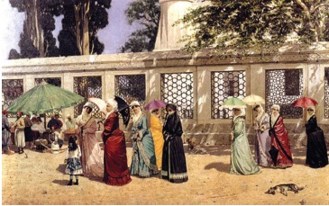

Bu yasak, İstanbul’un pek muhteşem ve cazip bir lüks ve sefahat devri yaşadığı Lâle Devri’nde, Nevşehirli Damat İbrahim Paşa Sadareti’nde, 1725 (Hicrî 1138) yılında çıkmıştır ki bugünkü yazılı dilimize çevrilmiş en mühim kısımları aşağı yukarı şudur:
“Allah her türlü belâ ve afetten korusun, İstanbul, Osmanlı ülkesinin yüzü suyudur. Ulema, temiz insan, edepli insan beldesidir. Ahalisinin, tabaka tabaka tespit edilmiş kıyafetleri vardır. Hal böyle iken bazı yaramaz avratlar halkı baştan çıkarmak kastıyla sokaklarda süslü püslü gezmeye, kâfir avratlarını taklit ederek başlıklarına acayip şekiller yapmaya başlamışlar. Terbiyeyi tamamen kaldıracak mertebede kıyafetler uydurmaları önceden de yasaklanmış iken namus perdesini tekrar kaldırmaktan korkmamaları, türlü türlü kötü kıyafetlerle dolaşmaları, birbirini görerek ismet ehli hatunları da baştan çıkarmak mertebelerine varmıştır. Irz ehli ve ismet sahibi kadınlar, kocalarını kendilerine bu yeni çıkma elbiseleri almaya zorlamakta imiş. Kudreti yetmeyenler veya yetip de karılarının bu sonradan çıkma kıyafetlere bürünmelerine rızası olmayanlar, karılarından ayrılma derecelerine varmışlar... Bu garip kıyafetler yasaktır. Kadınlar bundan böyle büyük yakalı feracelerle sokağa çıkmayacaklardır. Feracelerinde süs olarak bir parmaktan kalın şerit kullanmayacaklardır... Kadınlar sokaklarda veya mesirelerde yeni çıkma büyük yakalı feracelerle görülürlerse, feracelerinin yakaları o anda alenen kesilecektir, uslanmayıp ısrar edenler olursa, ikinci ve üçüncü seferinde yakalanıp İstanbul’dan taşraya sürgün edileceklerdir. Bu husus mahalle imamları vasıtasıyla bütün İstanbul kadınlarına tebliğ olunsun... Yaramaz avratlara uymak yüzünden sokakta elbiseleri yırtılarak masumluk perdelerinin lekeleneceği ırz ehli hatunlara anlatılsın...”
Bunları diken terzilere ve şeritçilere de tembih olunsun... Bu yasağın tatbikine Yeniçeri ağası memur edilmiştir... Asla göz yumulmasın, merhamet edilip himaye yolu tutulmasın... Yasak gereği gibi tatbik olunsun...”

Osmanlı’da kadınlar